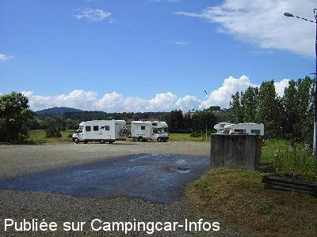

ASN = Aire de services avec stationnement nuit possible de :
PEYRAT LE CHATEAU
(N° 223)
Accès/adresse :
Place du Pré de L'Age
87470 PEYRAT LE CHÂTEAU
87470 PEYRAT LE CHÂTEAU
Latitude : (Nord) 45.81468° Décimaux ou 45° 48′ 52′′
Longitude : (Est) 1.77085° Décimaux ou 1° 46′ 15′′
Tarif : 2014
Eau : 2 €
Jetons à l'office du tourisme
Type de borne : Artisanale
Services :


Tous commerces
Autres informations :
Ouvert d'avril à octobre
25 emplacements
Tel : +33(0)555 694 875
peyrat-tourisme@wanadoo.fr
Le 02/07/2014 par Daniel 34
Le 04/12/2007 par christianbrieuc

Le 21/02/2007 par Kris
Le 21/02/2007 par Kris
de
Papé Jack
le 05/09/2014 :
de passage le 2 sept 2014 2 nuits super calme,un beau village qui se meurt,accueil à l'office de tourisme très chaleureux.
Belles promenade autour du village et du lac.
de passage le 2 sept 2014 2 nuits super calme,un beau village qui se meurt,accueil à l'office de tourisme très chaleureux.
Belles promenade autour du village et du lac.
de
Daniel 34
le 02/07/2014 :
Nous y avons passé une nuit au calme, pour finalement visiter un village superbe au matin. A recommander.
Nous y avons passé une nuit au calme, pour finalement visiter un village superbe au matin. A recommander.
de
HERVE
le 17/04/2014 :
bonjour ,
stationnement gratuit , mais services payants (jetons)
bonjour ,
stationnement gratuit , mais services payants (jetons)
de
Averti
le 20/05/2013 :
18/05/2013 De passage, aire payante 2€ avec jeton, le stationnement est interdit, l'aire n'est plus une aire au sens propre, c'est un endroit pour les poids lourds.
à éviter si pas de besoin urgent !
18/05/2013 De passage, aire payante 2€ avec jeton, le stationnement est interdit, l'aire n'est plus une aire au sens propre, c'est un endroit pour les poids lourds.
à éviter si pas de besoin urgent !
de
philr
le 10/05/2013 :
Passage 9/05/2013. Vu les photos, nous aurions fait halte. Lieu bien changé hélas. Aire en piteux état (carrelage cassé, sale...); parking complètement encombré par engins chantiers, détritus en tous genres; gros containers apports déchets (verres, plastiques, cartons) dès l'entrée parking; sol chaotique... Avons bivouqué ailleurs.
Passage 9/05/2013. Vu les photos, nous aurions fait halte. Lieu bien changé hélas. Aire en piteux état (carrelage cassé, sale...); parking complètement encombré par engins chantiers, détritus en tous genres; gros containers apports déchets (verres, plastiques, cartons) dès l'entrée parking; sol chaotique... Avons bivouqué ailleurs.
de
Michel
le 03/09/2008 :
passer en aout 2008
cette commune est tres ageable . Aire tres bien entretenue. en plus il y a certain soir des spetacle de rue par les habitant superrr
passer en aout 2008
cette commune est tres ageable . Aire tres bien entretenue. en plus il y a certain soir des spetacle de rue par les habitant superrr
de
Vanderstraeten Kris
le 21/02/2007 :
Overnacht op terugreis en zeer rustig geslapen.Toevallig ook marktdag.Anders niet zoveel te beleven maar wel een aangename parking.Zomer 2004.
Overnacht op terugreis en zeer rustig geslapen.Toevallig ook marktdag.Anders niet zoveel te beleven maar wel een aangename parking.Zomer 2004.
de
gayot thierry
le 26/05/2006 :
calme et pres des commerce vidange et eau gratuit pres du lac de vassivieres 6km
calme et pres des commerce vidange et eau gratuit pres du lac de vassivieres 6km
de
le 17/08/2005 :
plat , calme a cote des commerces et en plus y'a un base de loisirs a 200 m
plat , calme a cote des commerces et en plus y'a un base de loisirs a 200 m
de
Artonne Robert
le 09/06/2004 :
Le parking est partagé avec les poids lourds.Beaucoup de poussière, et surtout pas d'ombre.
Mais aire trés pratique pour les pleins et les vidanges.
Le parking est partagé avec les poids lourds.Beaucoup de poussière, et surtout pas d'ombre.
Mais aire trés pratique pour les pleins et les vidanges.
de
Gégé77
le 27/08/2003 :
Aire relativement propre, on peut apprécier le système de vidange cassette dans un tube PVC, ce qui évite toutes éclaboussures.
Grand parking plat.
Aire relativement propre, on peut apprécier le système de vidange cassette dans un tube PVC, ce qui évite toutes éclaboussures.
Grand parking plat.